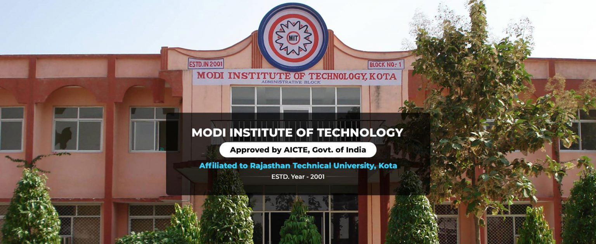

Modi Institute Of Technology

Branches Department in MIT KOTA
Departments in MIT Kota
These all are Various Departments which are present in the MIT College. Here is the brief discription of various departments as follows.
- 1. Computer Engineering, Artificial Intelligence & Data Science Engineering:
- This department focuses on the world of computers and technology. It involves designing, developing, and maintaining software and hardware components. With the rise of artificial intelligence and data science, this field explores creating smart systems that can learn from data and make decisions. As a computer science student aiming to become a software developer, you'll delve into programming, algorithms, data analysis, and more.
- 2. Electrical Engineering:
- Electrical engineering deals with the study and application of electrical systems, electronics, and electromagnetism. You'll learn about designing and managing electrical circuits, power systems, and various electronic devices. This knowledge is crucial in the modern world as electronics are an integral part of our lives, from smartphones to renewable energy systems.
- 3. Electronics and Communication Engineering:
- This field focuses on communication systems, electronic devices, and technologies. You'll explore topics like signal processing, digital communication, and circuit design. Understanding electronics and communication is essential for developing technologies that enable seamless information exchange and connectivity.
- 4. Mechanical Engineering:
- Mechanical engineering is about designing, analyzing, and manufacturing mechanical systems. It covers a wide range of areas, including thermodynamics, mechanics, and materials science. Aspects like machine design, robotics, and industrial processes fall within this domain. Mechanical engineers play a crucial role in creating everything from engines to advanced manufacturing techniques.
- 5. Basic Science & Humanity:
- This department covers fundamental subjects like mathematics, physics, and humanities. Mathematics provides the foundation for various engineering concepts and problem-solving techniques. Physics explains the principles behind the physical world, helping engineers understand the behavior of matter and energy. Humanities courses foster critical thinking and communication skills.
- 6. M.Tech - Digital Communication (ECE):
- This refers to a Master of Technology program with a specialization in Digital Communication within the Electronics and Communication Engineering field. In this program, you'll delve deeper into digital communication systems, studying topics like modulation techniques, coding theory, and wireless communication. This knowledge is crucial for designing efficient communication networks and technologies.